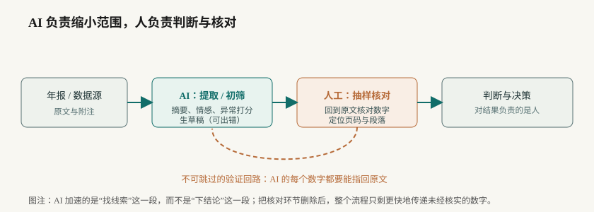
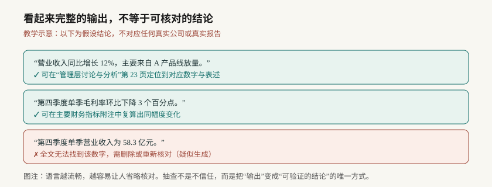

AI 驱动的财报分析：把生成变成可验证
大语言模型能快速读完全文、抽取要点、圈出异常，但它会流畅地编造数字，也无法对结论负责。使用 AI 的正确姿势不是“相信输出”，而是把它放在一条带核对环节的流程里。
AI 能做什么、不能做什么
大语言模型（LLM）在财报分析中的核心能力，是在短时间内处理大量文本与数字，把“找线索”这一步加速：摘要长文档、抽取关键数字、比较不同年份的表述、按预设框架生成初稿。
它不能做的同样清楚：它无法验证自己说的是不是真的，也不会告诉你哪个数字是编的。它的输出是一个“看起来很完整的草稿”，而不是已经核对过的结论。AI 不能对结论负责，能负责的只有签字的分析者。
先说结论：AI 输出需要 100% 核对，尤其是具体数字、页码与引文。“模型很强”与“结果可信”是两回事——流畅的语言本身不能作为正确性的证据。
由此，本章把 AI 的用法拆成三块：人机分工的流程（什么交给 AI、什么必须人做）、幻觉与核对的方法、以及异常检测工具的正确位置。
人机分工与验证回路
把 AI 放进流程时，关键是分清哪一段交给它、哪一段必须由人接手。一个可用的分工是：AI 负责“缩小范围”（提取、初筛、生成草稿），人负责“核对与判断”（回到原文验数字、结合业务做结论）。

下面这张表把常见任务按“适合交给 AI”到“必须人做”排列；表中不列任何具体产品的参数，因为模型版本、上下文长度与价格会随时变化，应以厂商官方说明为准。
| 任务 | 交由 AI 的部分 | 必须人做的部分 |
|---|---|---|
| 长文阅读 | 摘要、按章节提取要点 | 逐一核对数字与引文是否在原文中 |
| 比率计算 | 根据给定口径算出结果 | 确认分母口径、期间与合并范围 |
| 异常筛查 | 圈出指标组合异常的候选公司 | 对候选公司做实质尽调，判断异常成因 |
| 报告初稿 | 生成结构化草稿 | 删除无法溯源的句子，补上出处与判断依据 |
幻觉与逐条核对
大语言模型是“生成”模型，不是“检索”模型：当它需要填满一个分析框架而找不到对应事实时，可能生成一个看起来很像真的数字。这类错误被称为“幻觉”（hallucination），而它的危险之处在于语言越流畅，越容易被当成已经核实的内容。

降低幻觉的可操作做法：
- 要求可溯源的引用：让 AI 对每个结论标注原文段落或页码，然后你来抽查；无法定位的句子直接删除。
- 分步提问：先提取数据、再算比率、再做趋势、最后判断，比“一步给出投资建议”更可控。
- 固定口径：在提问时写明期间、单位、合并范围与分母口径，避免 AI 自行“补充”口径。
- 把计算交给确定性工具：比率与折现交给表格或代码，AI 只负责解释结果，不让它心算。
一个具体纪律：对涉及金额、比例、页码的每一个数字，至少抽查 3–5 个关键数据点回到原文；核对不上的，一律视为未验证。
读年报文本：情感与叙事
除数字表格外，年报中的“管理层讨论与分析”（MD&A）、业务概要、风险提示等文字部分信息密度很高。它们不像报表数字那样受严格准则约束，因此表述本身也值得看。
情感分析：只能当线索
AI 可以统计积极词与消极词的频率，输出一个“语气得分”。但这里有三层限制：一是词典与分词方式不同，得分会变；二是同一句在不同语境下情感可能相反；三是部分学术研究发现年报语气与后续业绩存在统计相关，但相关不等于因果，不同研究的结论并不一致，也不构成交易信号。
因此，“利润好看但语气得分低”只能作为一个需要进一步核实的提示，不能直接推断出“一定存在报表外的问题”。正确的下一步是回到附注与公告，看是否真的有未解决的风险事项。
叙事框架：看变化，不看单年
同一件事可以用不同方式描述：直接陈述、模糊化（“阶段性调整”）、用未来故事对冲当前问题（“新赛道初见成效”）。单独看一年很难判断，但把同一家公司连续几年的 MD&A 放在一起做纵向对比，语气与措辞的变化本身就是一个可选线索。
- 看具体性：同一类问题是否一年比一年说得模糊（如不再给市占率具体数字）。
- 看能与数据对应的部分：文字声称“突破”时，对应业务的分部收入是否真的在增长。
- 看披露的平衡性：是否只详述成功业务，对失败业务一笔带过。
注意：这些信号定义较主观，容易受到行业术语与公司惯例影响；把它作为尽调的方向，而不是直接评级依据。
异常检测的正确用法
传统比率分析依赖预设阈值（如资产负债率超过某值即高风险），但阈值因行业而异，真正危险往往不是单个指标超标，而是多个指标的组合模式异常。无监督学习方法（如 Isolation Forest、One-Class SVM、Autoencoder）可以学习同业财务数据的分布，标记出“与大多数公司不同的样本”。
数据准备：取同一行业上市公司的财务数据，选取一组核心指标（毛利率、ROE、资产负债率、周转率、经营现金流/净利润等）。
特征工程：标准化指标，加入同比变化量（如毛利率变化、应收占比变化），剔除高度相关的冗余指标。
模型训练：用无监督模型打分；注意污染率（预期异常比例）是人为设定的参数，它会直接决定被标出的公司数量，而不是由数据自动得出。
结果解读：用 SHAP 等工具看哪些指标拉高了异常分；重点看“没有被新闻覆盖”的安静异常公司。
人工复核：AI 负责“圈定名单”，人负责“实质尽调”。
三个必须声明的边界：一，异常不等于舞弊，它只说明“与同业不同”；二，一般应在行业内比较，跨行业的财务结构差异本身就会造成大量假阳性；三，模型结果受参数与样本区间影响，必须由人工复核，不能直接当作交易信号。
AI 输出核对工作台
把 AI 引用的数字与年报原文的数字放在一起，算一次差异率。默认演示：AI 引用 58.3 亿元、原文 54.6 亿元，差异率约 6.78%，超过 1% 即应视为未核对。
核对一个数字
两个输入需为同一指标、同一期间、同一单位。
这个工作台只做一个括号运算，它不能替你确认口径是否一致。如果差异很大，先怀疑口径（单位、合并范围、期间）而不是马上判定“AI 错了”。
核查清单与自测
每个结论后标注原文页码或段落，无法定位的句子直接删除。
对金额、比例、页码至少抽查 3–5 个关键数据点回到原文。
比率与折现交给表格或代码，不让 AI 心算。
情感与叙事分析只当线索，回到附注与公告核实具体事项。
异常检测限行业内比较，异常名单一律人工复核，不作交易信号。
自测一：AI 生成的报告语言流畅、结构完整，能否直接使用？
不能。流畅与完整不是正确性的证据。需要把每个数字回到原文核对，删除无法溯源的句子，能核对的才能进入结论。
自测二：异常检测模型把某公司标为“行业内最异常”，断定它造假吗？
不能。异常只说明它与同业不同，成因可能是业务模式、会计政策差异或真实的新情况；是否构成造假需监管或司法程序认定。模型的作用是确定尽调优先级。
结论：AI 的价值在于把信息处理的速度提上去，而不是把判断外包出去。把模型放在“提取—核对—判断”的流程里，它才是工具；去掉核对环节，它只是更快地产生不可靠的结论。
依据与边界
本页所有数字与图例均为教学示意，不指向任何真实公司或真实报告，也不构成投资建议。AI 工具不是会计准则或监管强制要求，模型能力与参数会随时变化；引用具体产品时必须注明版本与日期。
关于“年报文本语气与后续业绩的统计关系”，学术研究结论并不一致，且相关不等于因果；本页不给出具体相关系数或预测概率，以避免误用。